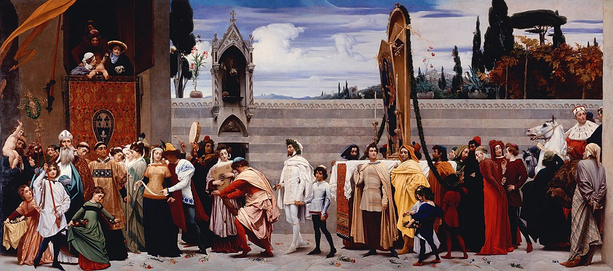

<head>
<meta charset="UTF-8" />
<meta name="keywords" content="drawing, painting" />
<meta name="description" content="drawings by Sunjy" />
<title>Sunjy</title>
<link rel="shortcut icon" type="image/x-icon" href="../../mImages/mCommon/favicon.ico" media="screen" />
<link rel="stylesheet" type="text/css" href="../../mCsses/mCommon/mCssA.css" />
<link rel="stylesheet" type="text/css" href="../../mCsses/mCommon/mCssB.css" />
<link rel="stylesheet" type="text/css" href="../../mCsses/mCommon/mCssC.css" />
<link rel="stylesheet" type="text/css" href="../../mCsses/mCommon/mCssD.css" />
<link rel="stylesheet" type="text/css" href="../../mCsses/mContent/mCssA.css" />
<link rel="stylesheet" type="text/css" href="../../mCsses/mContent/mCssB.css" />
<link rel="stylesheet" type="text/css" href="../../mCsses/mContent/mCssC.css" />
<link rel="stylesheet" type="text/css" href="../../mCsses/mContent/mCssD.css" />
</head>
<script type="text/javascript" src="../../mScripts/mContent/mContentAA.js" /></script>
<script type="text/javascript" src="../../mScripts/mContent/mContentAB.js" /></script>
<script type="text/javascript" src="../../mScripts/mContent/mContentAC.js" /></script>
<script type="text/javascript" src="../../mScripts/mContent/mContentAD.js" /></script>
<script type="text/javascript"></script> 
<script type="text/javascript">
document.write('<div class="mImgAbsolute"></div>');
/*
document.write('<p class="mFontSizeBColor" />From a white paper...</p>');
document.write('<table class="center"><tr><td>');
document.write('');
document.write('</td></tr></table>');
*/
</script>


<script type="text/javascript">
document.write('<p class="mFontSizeBColor" />Cimabue’s Celebrated Madonna carried in Procession through the Streets of Florence</p>');
document.write('<p class="mFontSizeSColor" />The painting “Cimabue’s Celebrated Madonna carried in Procession through the Streets of Florence” as created by Frederic Leighton is massive, measuring more than two meters tall and more than five meters wide.<br><br>The painting shows a scene from the 13th-century procession. It was the procession of an altarpiece of the Madonna and Child through the streets of Florence. The detailed description was provided by a 16th-century historian Giorgio Vasari’s.<br><br>The Madonna is being carried from the studio of the artist Cimabue to the church of Santa Maria Novella. Cimabue himself is depicted immediately in front of the Madonna wearing a laurel wreath.<br><br>He is followed by a group including several leading Florentine artistic figures of the day and on horseback at the right edge of the image, the King of Naples, Charles of Anjou.<br><br>The Madonna depicted, as seen from a very narrow-angle in the center of the painting, is actually not by Cimabue.<br><br>This error is the result of the miss-attributions of this altarpiece, which lasted past Leighton’s time, a mistake that was not corrected until 1889.<br><br>Frederic Leighton was 24 years old when he painted this artwork, and when it was first exhibited, it was well-received. So much so that Queen Victoria purchased it on the first day of the exhibition.<br><br>The National Gallery notes Victoria’s diary entry about this painting:<br><br>“There was a very big picture by a man called Leighton.<br> It is a beautiful painting, quite reminding one of a Paul Veronese, so bright and full of light.<br> Albert was enchanted with it—so much so that he made me buy it.”<br> – Queen Victoria<br><br>Cimabue<br><br>Cimabue (1240 – 1302) was an Italian painter from Florence. Although Byzantine models profoundly influenced him, Cimabue is generally regarded as one of the first great Italian painters to break from the Italo-Byzantine style.<br><br>While medieval art at Cimabue’s time was scenes that appeared flat and highly stylized, Cimabue’s figures were depicted with more lifelike proportions and shading than other artists of his time.<br><br>Art History has long regarded Cimabue as the last of an era that was overshadowed by the Italian Renaissance.<br><br>Giotto eclipsed Cimabue’s fame, so much so that Dante lamented Cimabue’s quick loss of public interest in the face of Giotto’s revolution in art:<br><br>O vanity of human powers,<br>how briefly lasts the crowning green of glory,<br>unless an age of darkness follows!<br>In painting, Cimabue thought he held the field,<br>but now it’s Giotto has the cry,<br>so that the other’s fame is dimmed.<br>– Dante<br></p>');
document.write('<table class="center" /><tr><td>');
document.write('<br>The painting shows a scene from the 13th-century procession. It was the procession of an altarpiece of the Madonna and Child through the streets of Florence. The detailed description was provided by a 16th-century historian Giorgio Vasari’s.<br><br>The Madonna is being carried from the studio of the artist Cimabue to the church of Santa Maria Novella. Cimabue himself is depicted immediately in front of the Madonna wearing a laurel wreath.<br><br>He is followed by a group including several leading Florentine artistic figures of the day and on horseback at the right edge of the image, the King of Naples, Charles of Anjou.<br><br>The Madonna depicted, as seen from a very narrow-angle in the center of the painting, is actually not by Cimabue.<br><br>This error is the result of the miss-attributions of this altarpiece, which lasted past Leighton’s time, a mistake that was not corrected until 1889.<br><br>Frederic Leighton was 24 years old when he painted this artwork, and when it was first exhibited, it was well-received. So much so that Queen Victoria purchased it on the first day of the exhibition.<br><br>The National Gallery notes Victoria’s diary entry about this painting:<br><br>“There was a very big picture by a man called Leighton.<br> It is a beautiful painting, quite reminding one of a Paul Veronese, so bright and full of light.<br> Albert was enchanted with it—so much so that he made me buy it.”<br> – Queen Victoria<br><br>Cimabue<br><br>Cimabue (1240 – 1302) was an Italian painter from Florence. Although Byzantine models profoundly influenced him, Cimabue is generally regarded as one of the first great Italian painters to break from the Italo-Byzantine style.<br><br>While medieval art at Cimabue’s time was scenes that appeared flat and highly stylized, Cimabue’s figures were depicted with more lifelike proportions and shading than other artists of his time.<br><br>Art History has long regarded Cimabue as the last of an era that was overshadowed by the Italian Renaissance.<br><br>Giotto eclipsed Cimabue’s fame, so much so that Dante lamented Cimabue’s quick loss of public interest in the face of Giotto’s revolution in art:<br><br>O vanity of human powers,<br>how briefly lasts the crowning green of glory,<br>unless an age of darkness follows!<br>In painting, Cimabue thought he held the field,<br>but now it’s Giotto has the cry,<br>so that the other’s fame is dimmed.<br>– Dante<br>" />');
document.write('</td></tr></table>');
</script>


